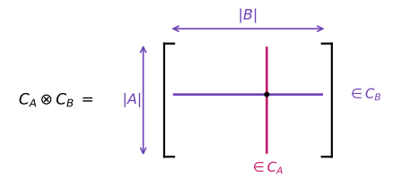

Quantum Tanner Codes
Quantum Tanner (QT) codes, introduced by Leverrier and Zémor (Quantum Tanner codes, Decoding quantum Tanner codes), form an asymptotically good family of quantum LDPC codes: they can simultaneously have constant rate, linear distance, and bounded-weight stabilizer checks.
QT codes admit two complementary descriptions:
- the original left-right Cayley complex (LRCC) description, which gives the geometric square-complex picture used in the original construction; and
- the lifted left-right action description, in which a small CSS template is lifted through commuting left and right regular actions of a finite group.
QuantumExpanders.jl supports both descriptions. This page focuses on the LRCC construction implemented by QuantumTannerCode. The lifted construction is documented separately on Quantum Tanner Codes via Left-Right Actions.
Two QT constructors in QuantumExpanders.jl
The two high-level constructors represent the same QT-code framework in different ways, but their inputs obey different constraints.
QuantumTannerCodeuses the bipartite LRCC. Its setsAandBmust be symmetric, must not contain the identity, and must satisfy the total non-conjugacy condition. The resulting code has\[n = \frac{|G|\,|A|\,|B|}{2}.\]
QuantumTannerViaLeftRightActionsuses the lifted algebraic description. HereAandBare multisets associated with the left and right regular actions; repeated elements are allowed and the LRCC total non-conjugacy condition is not required. If the two local-code lengths are $n_A$ and $n_B$, then\[n = |G|\,n_A n_B.\]
The LRCC description is especially useful when one wants the square-complex geometry explicitly. The lifted description is often more convenient for systematic searches over finite groups and local codes.
The bipartite left-right Cayley complex
Let $G$ be a finite group and let $A,B \subseteq G$ be symmetric generating sets,
\[A=A^{-1}, \qquad B=B^{-1}.\]
For the bipartite LRCC used by QuantumTannerCode, the generating sets must also satisfy
\[1_G \notin A,\qquad 1_G \notin B,\]
and the total non-conjugacy (TNC) condition
\[g^{-1}ag \neq b \qquad \text{for every } g\in G,\ a\in A,\ b\in B.\]
In particular, TNC implies $A\cap B=\varnothing$. In typical searches one also requires
\[\langle A\cup B\rangle = G\]
so that the construction uses the full group.
The vertex set consists of two copies of $G$,
\[V = V_0 \sqcup V_1, \qquad V_i = G\times\{i\}.\]
For each $a\in A$, an $A$-edge connects
\[(g,0) \sim (ag,1),\]
while for each $b\in B$, a $B$-edge connects
\[(g,0) \sim (gb,1).\]
These are bipartite double covers of the left and right Cayley graphs, respectively.
Squares and qubits
The faces of the complex are the four-cycles
\[q(g,a,b) = \{(g,0),\ (ag,1),\ (gb,1),\ (agb,0)\}, \qquad g\in G,\ a\in A,\ b\in B.\]
Each square carries one physical qubit.
Because the generating sets are symmetric, the same geometric square has multiple equivalent descriptions. After quotienting these redundant descriptions, the number of physical qubits is
\[|Q| = \frac{|G|\,|A|\,|B|}{2}.\]
For every vertex $v$, the incident squares are naturally indexed by
\[Q(v) \cong A\times B.\]
Thus the local view around a vertex is an $|A|\times|B|$ grid.

This local grid is the key geometric feature of the LRCC. Neighboring vertices share an entire row or column rather than a single qubit, which makes it possible to impose commuting $X$- and $Z$-type constraints.
Local tensor codes
Choose two binary classical codes
\[C_A \subseteq \mathbb{F}_2^A, \qquad C_B \subseteq \mathbb{F}_2^B.\]
Let $G_A$ and $G_B$ be generator matrices for these codes and let $H_A$ and $H_B$ be parity-check matrices, so the rows of $H_A$ and $H_B$ generate the corresponding dual spaces.
The natural code on the local $A\times B$ grid is the tensor code
\[C_A\otimes C_B.\]

In the implementation of QuantumTannerCode,
- the rows of $G_A\otimes G_B$ generate the local Z-type stabilizers on $V_0$; and
- the rows of $H_A\otimes H_B$ generate the local X-type stabilizers on $V_1$.
Equivalently, the two local stabilizer spaces are
\[C_A\otimes C_B \qquad\text{and}\qquad C_A^\perp\otimes C_B^\perp.\]

Why do the stabilizers commute? Whenever an $X$- and a $Z$-type local view overlap, their intersection is a row or a column of the local grid. On that shared slice, one restriction lies in a classical code and the other lies in its dual, so their binary inner product vanishes.
Parameters
For the standard asymptotic setting, take
\[|A|=|B|=\Delta,\]
with local-code dimensions
\[\dim C_A = \rho\Delta, \qquad \dim C_B = (1-\rho)\Delta.\]
The number of physical qubits is
\[n=\frac{|G|\Delta^2}{2}.\]
Counting the local $X$- and $Z$-type generators gives the familiar rate lower bound
\[k \geq (1-2\rho)^2 n.\]
Thus the construction has constant rate whenever $\rho\neq 1/2$. For constant $\Delta$, both stabilizer weight and qubit degree remain bounded, so the family is LDPC.
Linear distance requires additional expansion hypotheses. Two ingredients enter the original analysis:
Spectral expansion. The Cayley graphs generated by $A$ and $B$ should have strong spectral expansion. Explicit Ramanujan constructions such as Morgenstern and LPS provide useful sources of generating sets.
Product expansion. The local classical codes must prevent cancellation between the row and column components of a local view. Random local codes satisfy the required product-expansion property with high probability in the asymptotic construction.
Together these ingredients yield constant relative distance.
Constructing an LRCC quantum Tanner code
QuantumTannerCode takes a finite group, two LRCC generating sets, and one classical code pair for each side:
QuantumTannerCode(
G,
A,
B,
((H_A, G_A), (H_B, G_B)),
)Here is a small explicit example using $G=C_3\times S_3$ and the $[6,3,3]$ classical code on both sides:
julia> using QuantumExpanders, Oscar, QECCore
julia> G = small_group(18, 3);
julia> r, s, t = Oscar.gens(G);
julia> A = [s, s^2, t, t^2, r*t^2, r];
julia> B = [r*s, r*s^2, s*t, s^2*t^2, r*s*t^2, r*s^2*t^2];
julia> H633 = [1 0 0 0 1 1;
0 1 0 1 0 1;
0 0 1 1 1 0];
julia> G633 = [0 1 1 1 0 0;
1 0 1 0 1 0;
1 1 0 0 0 1];
julia> c = QuantumTannerCode(
G,
A,
B,
((H633, G633), (H633, G633)),
);
julia> code_n(c), code_k(c)
(324, 8)The parity-check matrices can then be obtained in the usual way:
hx, hz = parity_matrix_xz(c)When to use each construction
Use QuantumTannerCode when:
- you want the original LRCC geometry explicitly;
- you already have symmetric generating sets satisfying TNC; or
- you are searching directly over LRCC generating-set pairs.
Use QuantumTannerViaLeftRightActions when:
- you want to work directly with the lifted left/right regular actions;
- your generating data are multisets or contain repeated elements;
- you want to vary the two local-code lengths independently; or
- you want to search over local-code permutations and group lifts without imposing the LRCC TNC condition.
Further reading
- Leverrier & Zémor, Quantum Tanner codes and Decoding quantum Tanner codes.
- (Dinur et al., 2022) — the left-right Cayley complex and locally testable codes with constant rate, distance, and locality.
- Panteleev & Kalachev, Asymptotically good quantum and locally testable classical LDPC codes.
References
- Dinur, I.; Evra, S.; Livne, R.; Lubotzky, A. and Mozes, S. (2022). Locally testable codes with constant rate, distance, and locality. In: Proceedings of the 54th Annual ACM SIGACT Symposium on Theory of Computing; pp. 357–374.